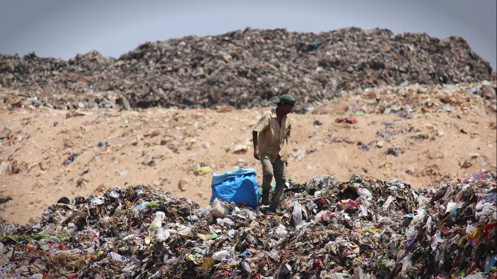
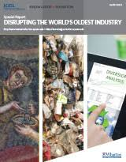

News

Waste management rules in India are based on the principles of "sustainable development", "precaution" and "polluter pays". These principles mandate municipalities and commercial establishments to act in an environmentally accountable and responsible manner—restoring balance, if their actions disrupt it. The increase in waste generation as a by-product of economic development has led to various subordinate legislations for regulating the manner of disposal and dealing with generated waste are made under the umbrella law of Environment Protection Act, 1986 (EPA). Specific forms of waste are the subject matter of separate rules and require separate compliances, mostly in the nature of authorisations, maintenance of records and adequate disposal mechanisms. neha
April 18,2019
With rapid urbanisation, the country is facing massive waste management challenge. Over 377 million urban people live in 7,935 towns and cities and generate 62 million tonnes of municipal solid waste per annum. Only 43 million tonnes (MT) of the waste is collected, 11.9 MT is treated and 31 MT is dumped in landfill sites. Solid Waste Management (SWM) is one among the basic essential services provided by municipal authorities in the country to keep urban centres clean. However, almost all municipal authorities deposit solid waste at a dumpyard within or outside the city haphazardly. Experts believe that India is following a flawed system of waste disposal and management.

The key to efficient waste management is to ensure proper segregation of waste at source and to ensure that the waste goes through different streams of recycling and resource recovery. Then reduced final residue is then deposited scientifically in sanitary landfills. Sanitary landfills are the ultimate means of disposal for unutilised municipal solid waste from waste processing facilities and other types of inorganic waste that cannot be reused or recycled. Major limitation of this method is the costly transportation of MSW to far away landfill sites.. Aman
April 12,2019
A report by IIT Kanpur (2006) found the potential of recovering at least 15 per cent or 15,000 MT of waste generated every day in the country. This, the report said, could also provide employment opportunities to about 500,000 rag-pickers. The report added that despite immense potential in big cities in this area, participation from non-profits or community is limited.

In some urban centres, people working in the informal sector collect solid waste for each doorstep to get a collection fee and derive additional income from sale of recyclables. The informal recycling industry plays a major role in waste management. It also ensures that less waste reaches landfills. niharika
April 17,2019
Iswar Ahluwalia, in an article, points out that more than three-fourth of solid waste management budget is allotted to collection and transportation, leaving leaves very little for processing or resource recovery and disposal.

There has been technological advancement for processing, treatment and disposal of solid waste. Energy-from-waste is a crucial element of SWM because it reduces the volume of waste from disposal also helps in converting the waste into renewable energy and organic manure. Ideally, it falls in the flow chart after segregation, collection, recycling and before getting to the land fill. But many waste to energy plants in India are not operating to their full potential.. dhingra
May 18,2019
Installation of waste-to-compost and bio-methanation plants would reduce the load of landfill sites.
Tags
Most Popular

garbage bins become smart alert civics body whenever it overflows
April 18, 2019

India’s challenges in waste management.
April 26, 2019

principles of "sustainable development", "precaution" and "polluter pays"..
April 28, 2019
SOLID WASTE MANAGEMENT.
April 08, 2019
Trending